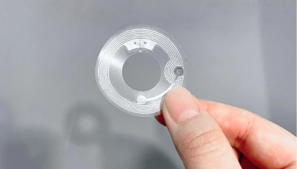
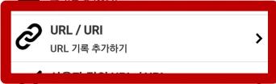
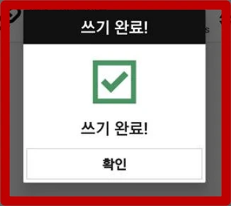

01
NFC Tools 설치

NFC Tools · wakdev 앱을 설치하고 열어요.
좋아하는 K컬처를 웹사이트로 만들고,
톡! 터치하면 열리는 나만의 NFC 키링으로.
정답부터 찾기보다, 내 생각을 말하고 친구의 생각을 들어 봐요.
질문을 읽고 → 생각을 말하고 → 예시를 확인해요. 사전 이야기 구성 원문 ↗
취향 탐색 → 콘셉트 기획 → AI 요청서 → 친구 피드백
무엇을 소개하는지 바로 알 수 있나요?
가장 눌러 보고 싶은 기능은 무엇인가요?
Gemini 이미지 제작·수집 → Canva AI 코드 → 테스트와 게시
내 반을 확인하고 입장해요. Canva에 로그인한 뒤 수업을 시작해요.
아직 초대 링크가 연결되지 않았어요. 지금은 아래 ‘Canva 열기’로 준비해요.
Canva 열기앞에서 기획한 K컬처 웹사이트를 Canva AI 코드로 만들어줘. 준비한 이미지와 사진을 활용하고, 모든 메뉴와 버튼이 작동하게 해줘. 휴대전화에서도 보기 편하게 만들고 내가 정한 색상과 분위기를 반영해줘. 자료가 없는 내용은 예시로 표시해줘.
콘셉트 5분 → Canva 디자인 15분 → 제출 7분 → 조립과 소개
허용된 이미지 사용 · 개인정보 넣지 않기


태그 위치는 키트에 맞춰요. 완전히 고정하기 전에 4차시에서 기록·인식을 먼저 확인하면 좋아요.
준비 5분 → 기록 13분 → 연결 테스트 9분 → 작품 교환과 회고
NFC Tools · wakdev 앱을 설치하고 열어요.

Write(쓰기) 탭에서 기록 추가를 눌러요.

텍스트 대신 URL / URI를 선택해요.
2차시 주소를 붙여넣고 확인을 눌러요.
https://가 두 번 들어가지 않게!

쓰기 / ○○ 바이트를 누른 뒤 태그를 대요.
완료될 때까지 움직이지 않아요.

쓰기 완료 확인 → 앱 닫기 → 다시 태그하기.
알림을 눌러 내 웹사이트를 열어요.
실습 화면·조립 사진: 제공 자료 「북부미래직업메이커체험_NFC」 7·9·10쪽. 자료의 음악 링크 대신 2차시에서 만든 웹사이트 주소를 사용해요.
태그를 움직이지 않고 다시 쓰기 → 쓰기 가능·용량 확인 → 선생님께 예비 태그 요청
인터넷 확인 → 브라우저에서 주소 열기 → 게시·접근 권한 확인 → URL / URI로 다시 기록
카메라·Wallet 종료 → 비행기 모드 확인 → 상단을 태그에 대기 → 미지원 기종은 앱의 Read(읽기) 사용
NFC 지원 기기가 없으면 공용 기기로 실습해요.